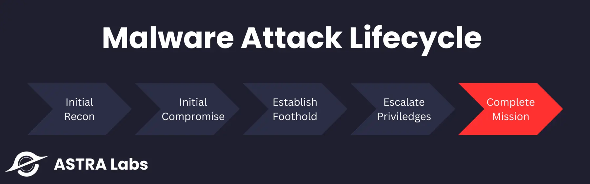
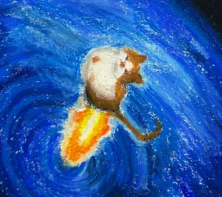
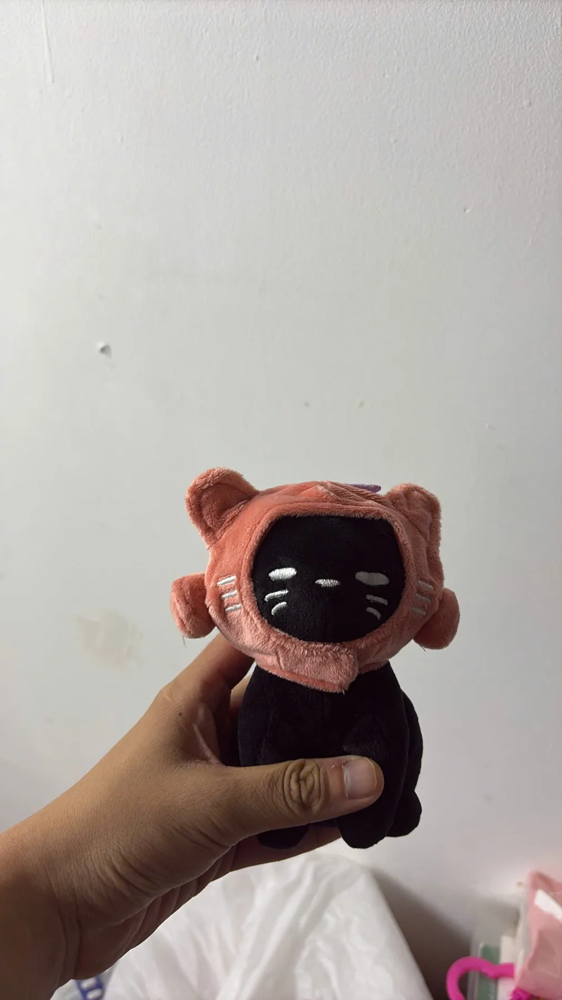
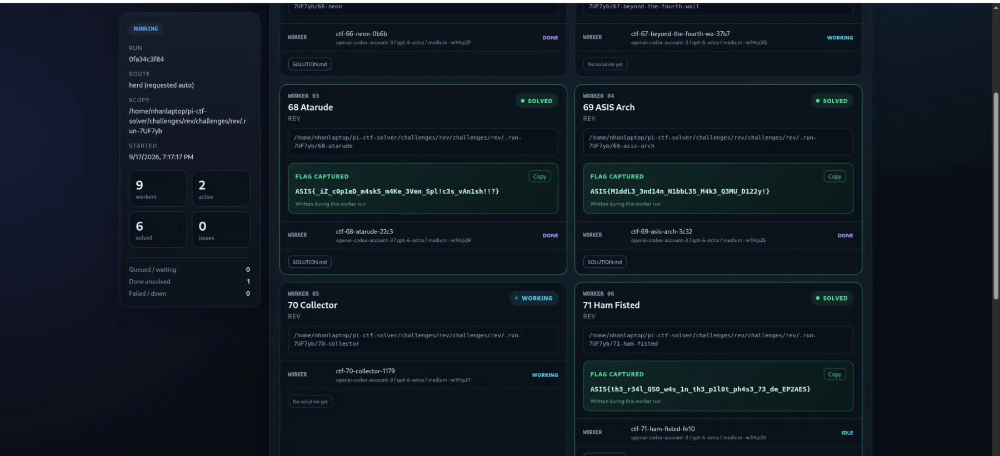
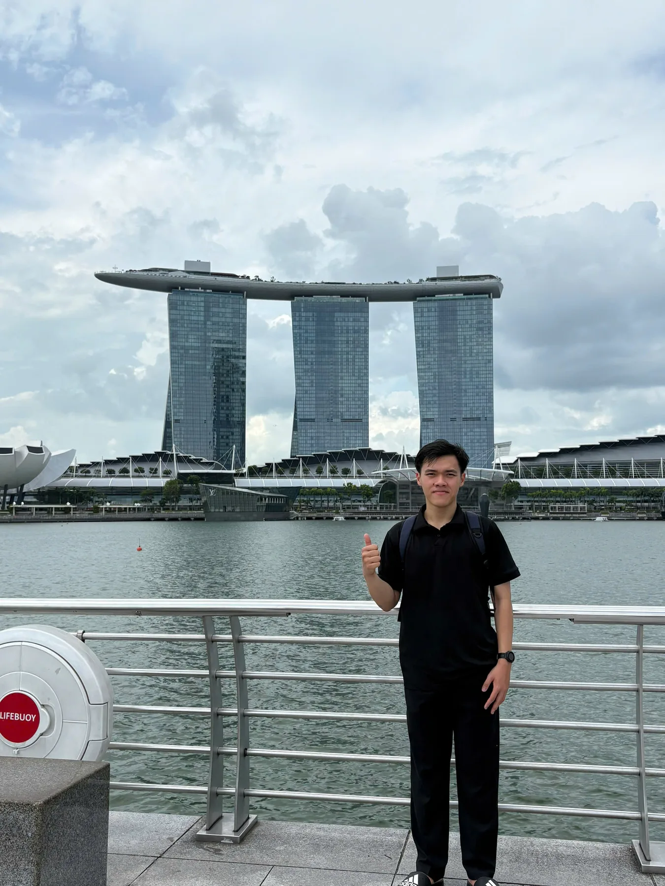
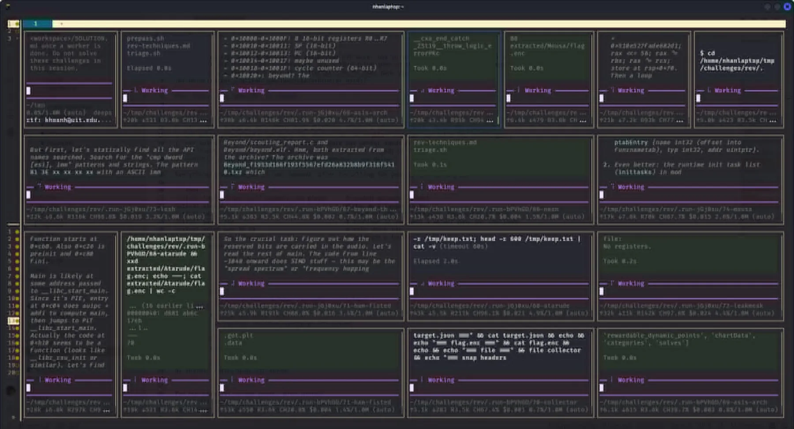

Malware for Beginners: Bộ nhớ, PE và shellcode
Năm phần: stack/heap và calling conventions; cấu trúc PE; Windows loader và DLL imports; shellcode qua PEB và Export Table; tổng quan malware và lab inject.

xin chào,
Nguyen Trong Nhan · cryptography · CTF · research
learning in public: every solved problem becomes a reusable note


latest.log
What's new in the notebook? Browse the archiveNăm phần: stack/heap và calling conventions; cấu trúc PE; Windows loader và DLL imports; shellcode qua PEB và Export Table; tổng quan malware và lab inject.

One platform login, isolated challenge workspaces, and one worker agent per challenge, with a live dashboard and measured parallel gains.

An evidence-driven agent architecture that inspects challenge artifacts, separates claims from observations, and verifies solutions before reporting.
exploring.txt
CTF cryptography, LWE / RLWE, FHE, PRNG state recovery, multi-agent systems, prompt & context engineering.
results.txt
I am an Information Security student in the UIT Honor Program, focused on cryptography, challenge-driven research, and reliable multi-agent systems. I am studying how agent systems can reason over real challenge artifacts without skipping evidence, while continuing hands-on work in classical and lattice cryptography. This is my public lab notebook.

life-the-first-final.md My first onsite CTF final A visual field log from Grey Cat The Flag Finals in Singapore. 01 / writeups writeup/ Writeups Reproducible challenge analysis, exploit scripts, and verification. 02 / learning learning/ Learning Cryptography concepts, papers, protocols, and implementation notes. 03 / projects project/ Projects Research prototypes and security-focused systems under active development. 04 / life logs life/ Life logs Competition travel, academic milestones, and notes beyond the terminal.The galaxy behind this page is procedural: three spiral arms of seeded scatter, a compact warm core, pale blue and white outer stars, and a muted violet haze. It is artistic, not an astronomical simulation.
It runs as three draw calls with slow rotation and a little pointer parallax. The button in the corner pauses it, and visitors who prefer reduced motion get a still first frame. The Universe page shows it at full strength.
profile.mp4
tag wall
in progress
